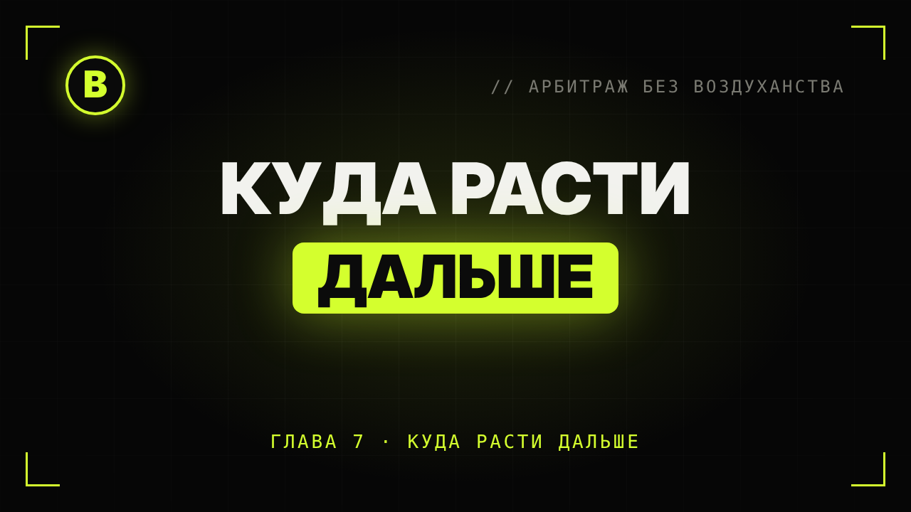
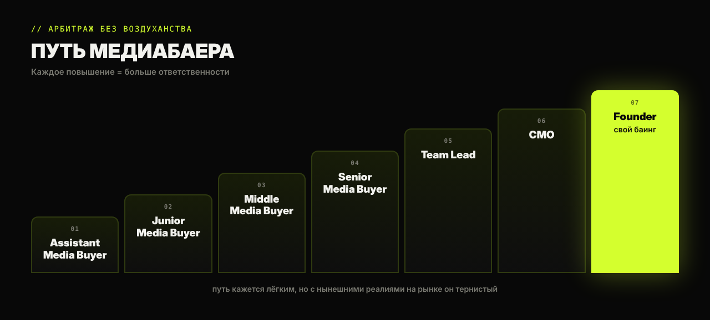

Куда расти дальше

Путь медиабаера
Рост понятен в рамках самой профессии. Если твой путь начался в хорошей команде, он довольно простой:
Assistant Media Buyer → Junior → Middle → Senior → Team Lead → CMO, а если захочешь свой баинг, то дальше Founder.

Путь с виду лёгкий, но с нынешними реалиями на рынке очень тернистый. Каждое повышение — это больше ответственности.
Если термины незнакомы
Team Lead — руководитель группы баеров. CMO — директор по маркетингу, отвечает за всё направление. Founder — основатель, в данном случае своей баинг-команды.
Из баера в таргетолога и обратно
Превратиться из обычного баера в таргетолога — очень сложная трансформация. Как минимум потому, что баер проводит больше времени в работе вне Facebook, чем таргетолог.
А вот из таргетолога в баера попасть легче: он больше знает, как работает Andromeda, разные тонкости и фишки.
Что такое Andromeda
Andromeda — система подбора рекламы в Meta (Facebook и Instagram), которая решает, каким людям показывать какое объявление.
Совет на будущее
Больше работай с таблицами и аналитикой. Научись отвечать за каждый потраченный доллар. У тебя должен быть не приблизительный аргумент, почему ты сделал так, а не иначе, а понятная логика в каждом шаге.
Как это делать на практике
Перед каждым решением запиши четыре вещи: что меняешь, почему, какого результата ждёшь и по какой метрике проверишь. Через неделю у тебя будет история решений, на которую можно опереться и которую не стыдно показать тимлиду. Для этого и нужен учёт из главы 5.
Итог курса
- Арбитраж — это форма заработка для стрессоустойчивых.
- Ты посредник между трафиком и партнёркой (глава 1).
- Прежде чем лить, изучи ГЕО и сложи свой подход, а не копируй спай (главы 1 и 4).
- Выбирай партнёрку без постбэка, веди трекер и не вкладывай всё в одного агента (главы 2 и 6).
- Facebook штормит: не всё зависит от тебя (глава 3).
- Считай конверсии и ломай связку по цифрам (глава 5).
- Расти через цифры и понятную логику (глава 7).
Спасибо, что дочитал. Если курс был полезен, расскажи о нём тем, кто только начинает.
Новые материалы выходят в канале. Подпишись, чтобы не пропустить.
Подписаться на «Воздухан»